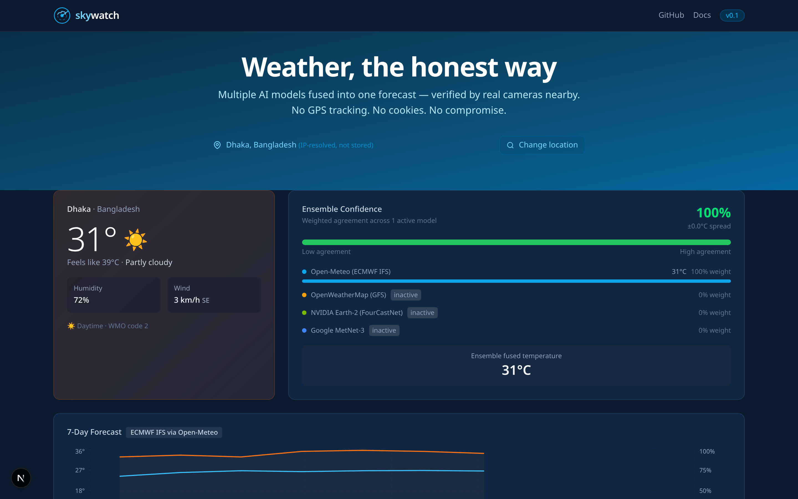
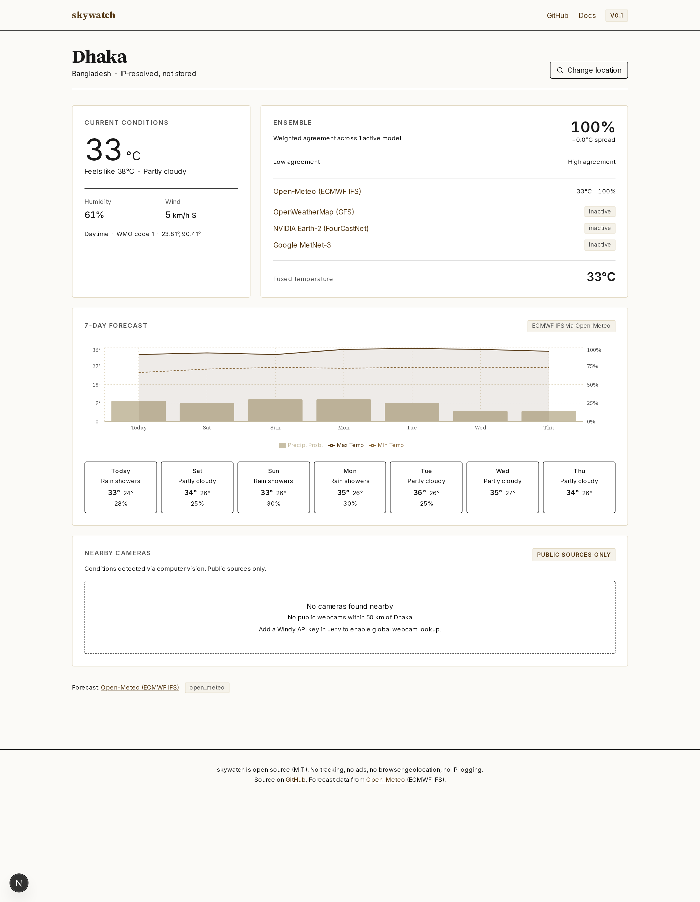
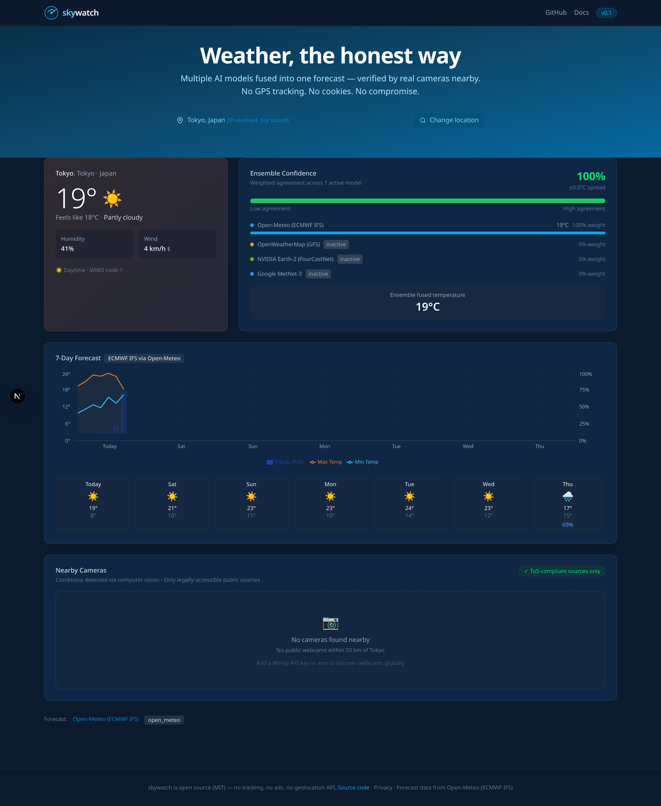
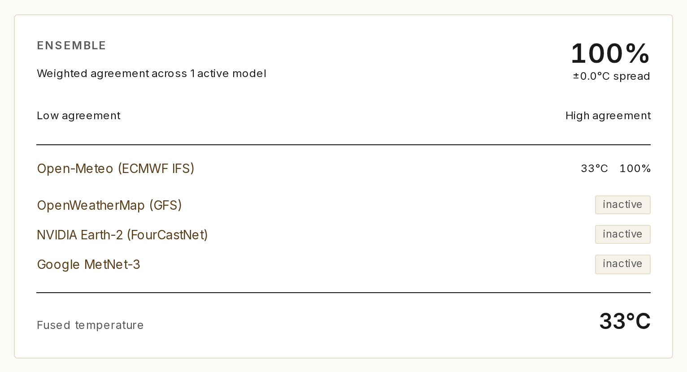
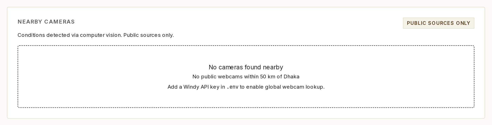

skywatch, first demo
skywatch is a small weather prototype. It pulls a 7-day forecast from Open-Meteo, resolves the user's city server-side from the IP without calling the browser Geolocation API, and can run a computer-vision check against public webcams. The screenshots below are straight captures from the running app.
Screenshots





Live proof Live
The three panels below cross-check a real public webcam against the current Open-Meteo forecast for the same coordinates. Everything on this page is fetched by your browser when the page loads: the camera image, the forecast, and the timestamp. Reload the page and you get a fresh pair. There are no cached frames stored in the repo for this section.
Camera 1. E6 Alsgård, Nordland, Norway
Camera 2. E6 Aisaroaivi, Finnmark, Norway
Camera 3. NOAA GLERL, Chicago, USA
{kind=link}
A note on timing. The Norwegian cameras are above the Arctic Circle and in northern Norway, so between roughly 22:00 and 04:00 UTC you will see night frames. The Chicago camera is 6 time zones west and shows night from roughly 02:00 to 12:00 UTC. If you open the page in the middle of the night at all three locations, the frames will be dark, and that is itself a consistency check.
Status
What is live today, what needs a key, and what is on the roadmap.
| Feature | State |
|---|---|
| Open-Meteo / ECMWF IFS forecast | Live, no key |
| IP to city geolocation (ipapi.co) | Live |
| Cascading city picker | Live |
| Ensemble fusion engine | Live, 33 passing tests |
| 7-day chart and daily cards | Live |
| HSV and Sobel heuristic classifier | Live |
| US DOT 511 camera integration | Live (public data) |
| OpenWeatherMap provider | Needs key |
| Windy webcam integration | Needs key |
| NVIDIA Earth-2 NIM | Stub, target v0.3 |
| EfficientNet-B0 fine-tuned classifier | Pipeline ready, target v0.2 |
| Google MetNet-3 | Placeholder, no public API yet |
| LLM narration | Roadmap, v0.2 |
Reproduce locally
The screenshots above were captured on a fresh clone with no API keys set:
git clone https://github.com/ruddro-roy/skywatch
cd skywatch
docker-compose upThen open http://localhost:3000. See DEMO.md for the non-Docker path.